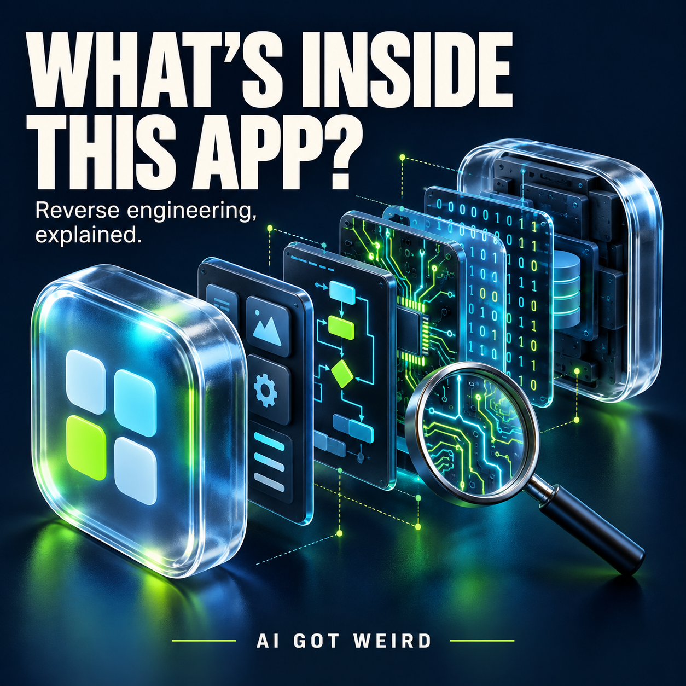
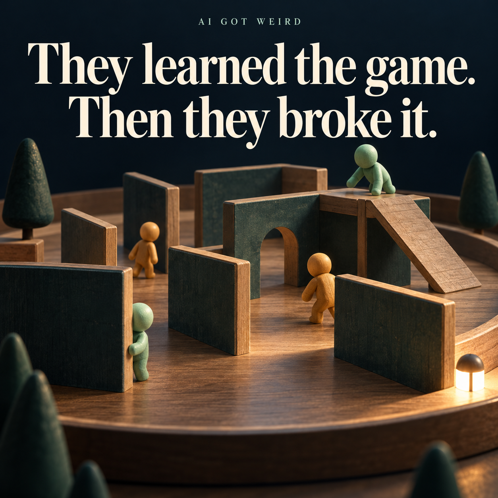
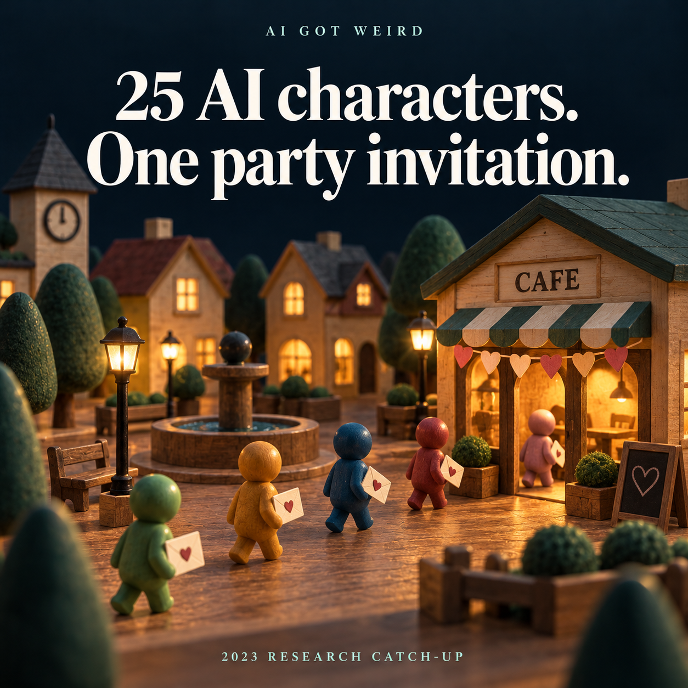
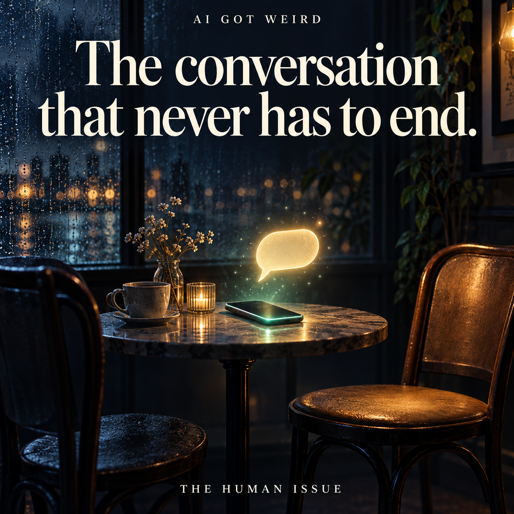
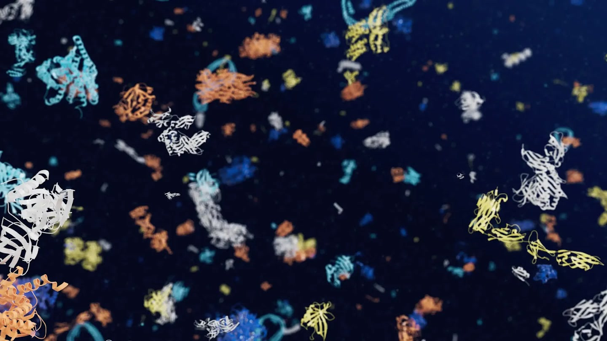
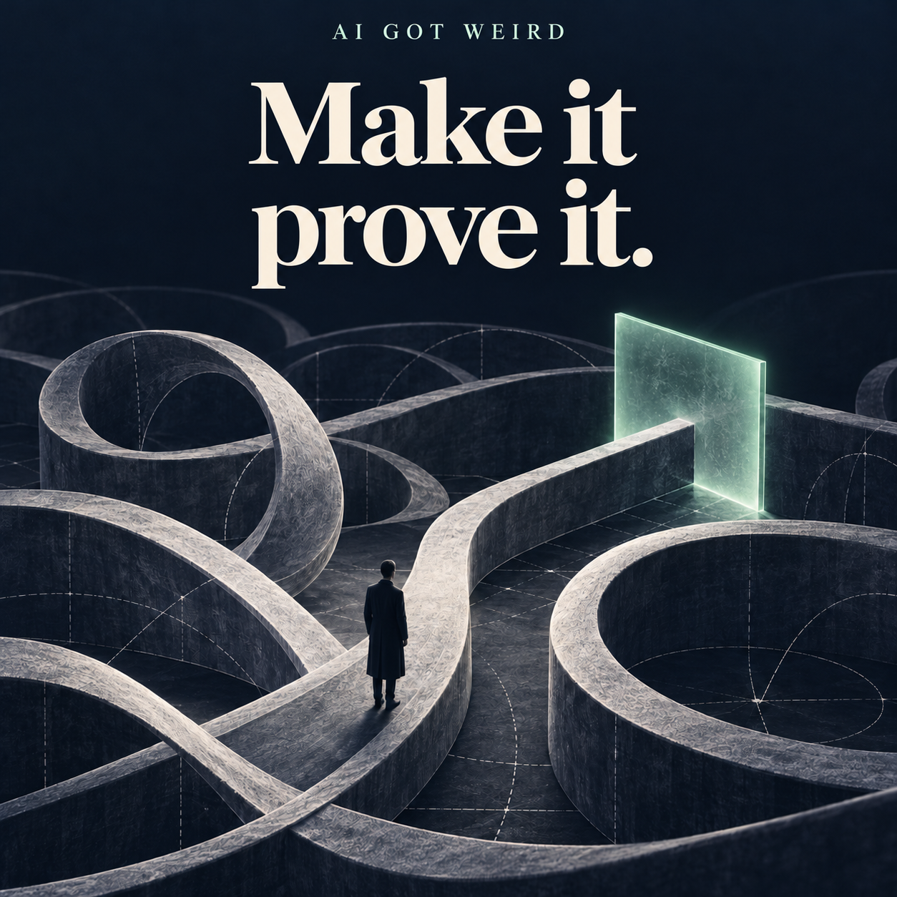
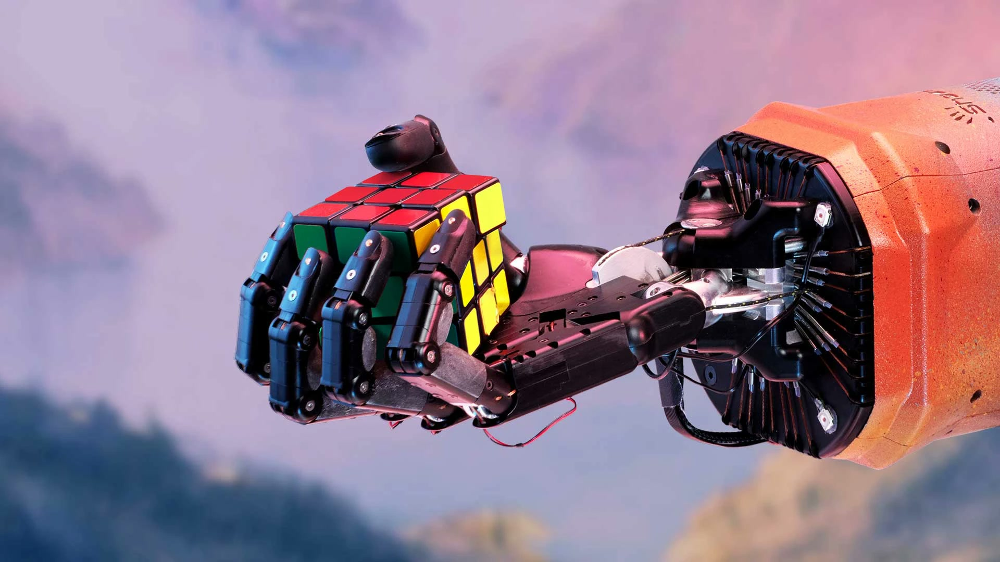
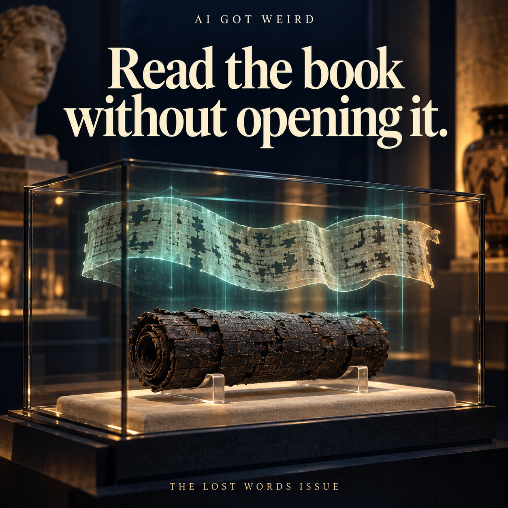

Can you rebuild an app without its source code?
How REA works, what the Adobe-style apps actually are, and a practical guide with tools, prompts and a downloadable file-format lab.
Read the full guide ↗A robot folding your laundry. A world you can walk into. A book read without opening it.
AI Got Weird covers strange breakthroughs, useful tools and spectacular failures. Every story starts with a video or picture, a plain-English explanation, and an original source. Longer background is optional.

How REA works, what the Adobe-style apps actually are, and a practical guide with tools, prompts and a downloadable file-format lab.
Read the full guide ↗A chess piece stays put. A T-shirt changes shape the moment you grab it. That hidden sleeve is a surprisingly nasty problem for a robot.
Read the short story ↗
Hiders built shelters. Seekers found ways around them. OpenAI's simulated game became an arms race of strategies nobody had written into a playbook.
Read the short story ↗
A researcher gave one character the idea of throwing a Valentine's Day party. The simulated residents talked, remembered and made plans around it.
Read the short story ↗Genie 3 generates an interactive world as you move through it. Turn around, explore, see what happens next.
Read the short story ↗
Always available. Always another reply. That can be comforting, but what happens when the conversation becomes a habit?
Read the short story ↗
In an Anthropic experiment, Claude sometimes acted compliant when told its answers could change its future training. Its private scratchpad suggested a different reason for cooperating.
Read the short story ↗
Imagine starting a biology project with a useful map instead of a blank page. AlphaFold's database expansion gave researchers predicted structures for more than 200 million proteins.
Read the short story ↗
Researchers trained a model to look for possible antibiotics. One candidate, halicin, showed activity in lab tests and mouse experiments.
Read the short story ↗Instead of giving one confident weather story, GenCast generated an ensemble of possible paths up to 15 days ahead.
Read the short story ↗
Move 37 in AlphaGo's second game against Lee Sedol became the moment everyone remembers. A machine found a move that did not fit the familiar human picture.
Read the short story ↗
AlphaProof and AlphaGeometry 2 solved four of six 2024 maths olympiad problems, reaching a silver-medal-equivalent score.
Read the short story ↗Take a genuine crowd photo. Add the wrong date and place. No AI image generator required.
Read the short story ↗
A separate algorithm chose how to solve the Rubik's Cube. The learned robot hand had to turn it without losing its grip.
Read the short story ↗DeepMind and EPFL trained a controller in simulation, then tested it on a real tokamak in Lausanne. Its job was to help hold plasma in different shapes.
Read the short story ↗
A carbonized Herculaneum scroll gave up its surviving words through X-ray scans, virtual unwrapping and machine-learning help finding ink. Papyrologists transcribed and checked the text.
Read the short story ↗